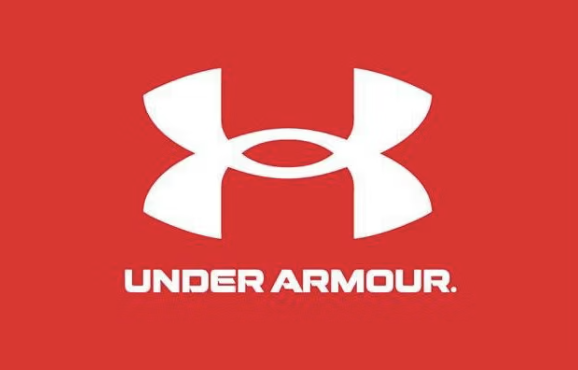

Under Armour Purchase vs Age
Model how customer age relates to Under Armour purchase likelihood, compare a Linear Probability Model (LPM) to Logistic Regression, and validate with a simple holdout.
Tools: R (readxl, dplyr), Excel
1) Purpose / Objective
Summary: I modeled how Age relates to Under Armour (UA) purchase likelihood using a Linear Probability Model (LPM) and Logistic Regression, then compared out-of-sample performance with a simple holdout split. The analysis quantifies Annabel’s hypothesis that UA skews younger and turns model outputs into clear actions.
Case & Business Question
Brand context: Under Armour pioneered compression gear. Annabel believes UA resonates with younger customers than Nike/Adidas.
Business question: How does the probability of purchasing UA change with age? If younger customers are more likely to purchase, how large is that effect, and which model better predicts purchases?
2) Methodology
Data Summary
- Rows: 30 customers (class exercise)
- Fields: Age (numeric, years), Purchase (binary: 1 = purchased UA, 0 = no purchase)
- Target/Feature: Target = Purchase; Feature = Age
- Data hygiene: Purchase coded 0/1; no missing in predictors; ordered split (first 20 = train, last 10 = validation) per instructions.
Models & Validation
- LPM: \(P(\text{purchase}) = \beta_0 + \beta_1 \cdot \text{Age}\). Simple slope interpretation; can predict outside [0,1].
- Logistic: \(\text{logit}(P) = \beta_0 + \beta_1 \cdot \text{Age}\). Proper probabilities in [0,1]; coefficients map to odds ratios.
- Holdout: Ordered 20 train / 10 validation. Cutoff = 0.50. Report Accuracy and Brier score for calibration.
- Decision rules: Prefer model with higher accuracy and lower Brier; if LPM yields probs <0 or >1, favor Logistic for deployment.
3) Key Takeaways
- Direction: Negative age slope in both models → younger customers are more likely to buy UA (supports the hypothesis).
- Magnitude: Age 20 vs 30 gap of ~15–25 pts is material for targeting.
- Model choice: Logistic is preferred for deployment—probabilities are constrained to [0,1] and slightly better calibrated.
- Actions: Prioritize younger segments for UA creatives; use logistic probabilities to score leads (e.g., contact p ≥ 0.60) and track lift by age bands.
- Limitations: Small n (30) and single predictor; treat findings as directional. Next, add features (sport category, training frequency) and use cross-validation.